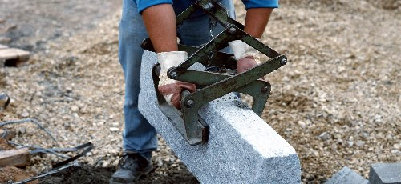

Die Berufsgenossenschaft der Bauwirtschaft hat, neben der Verhütung von Arbeits- und Wegeunfällen, das Ziel, arbeitsbedingte Gesundheitsgefahren zu verhindern.
Aus diesem Grund hat sich eine Gruppe von Mitarbeitern mit dem Thema "Ergonomie bei Bauarbeiten" beschäftigt. Die Arbeitsergebnisse dieser Arbeitsgruppe sind nun auf einer eigenen Internetseite abrufbar. Hier erhalten Sie vielfältige Informationen dazu, wie Sie körperliche Überlastungen vermeiden können. Konkrete Produktinformationen weisen auf geeignete Hilfsmittel und ergonomische Arbeitsmittel hin.